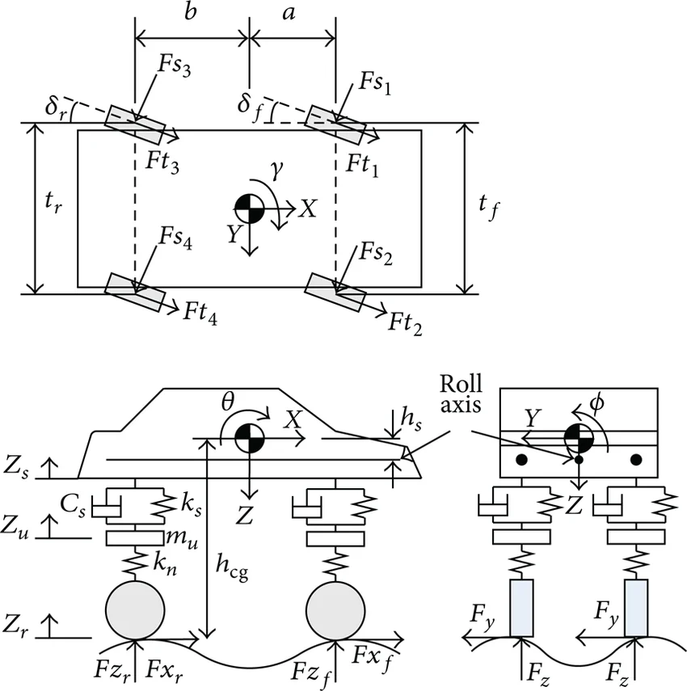
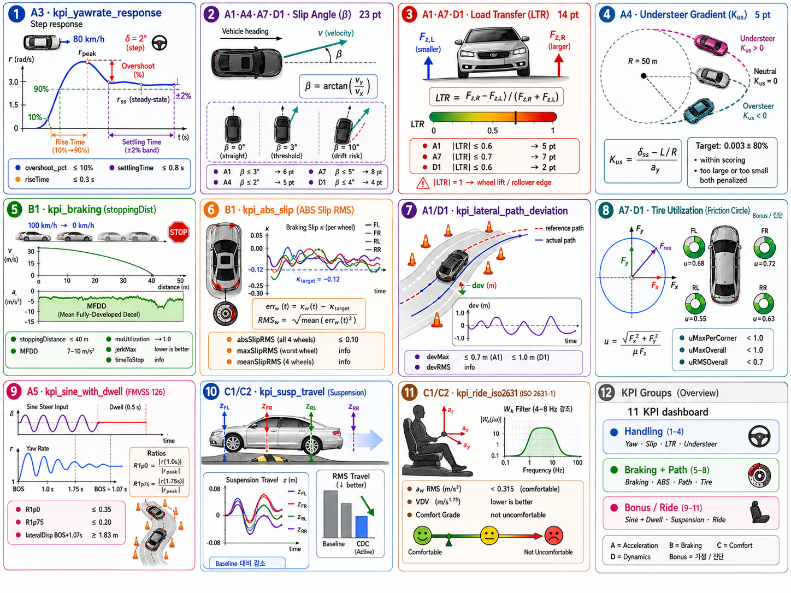
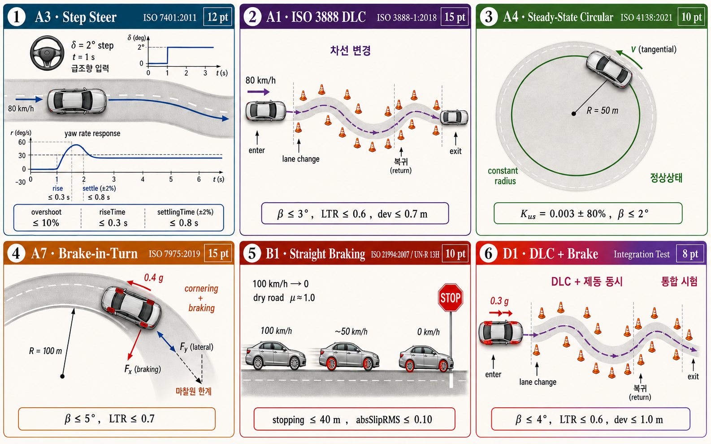

프로젝트 개요
BMW_5 가상 차량을 6개 표준 시나리오에서 제어해, baseline KPI를 임계 아래로 떨어뜨린다.
한 줄로
- sideSlipMax 30.5°
- stoppingDistance 72.3 m
- absSlipRMS 0.73
- sideSlipMax ≤ 5°
- stoppingDistance ≤ 40 m
- absSlipRMS ≤ 0.10
점수 구조 — 100점 만점
| 시나리오 | 이름 | 배점 |
|---|---|---|
| A3 | Step Steer | 12 pt |
| A1 | ISO 3888 DLC | 15 pt |
| A4 | SS Circular | 10 pt |
| A7 | Brake-in-Turn | 15 pt |
| B1 | Straight Brake | 10 pt |
| D1 | DLC + Brake | 8 pt |
- 수학적 모델링 깊이 (8)
- 제어기법 선택 정당성 (8) — “왜 PID? 왜 LQR 안 썼나” 둘 다 적기
- Gain 계산 과정 (6) — ZN tuning rule, pole placement, iteration
- 결과 분석 + 한계 인식 (5) — 솔직한 자기비판
- 가독성 + 인용 (3)
| 항목 | 점수 |
|---|---|
| A2 Severe DLC 또는 A5 FMVSS 126 추가 통과 | +3 |
| ctrl_coordinator 마찰원 + WLS allocation | +3 |
| C1 single bump 또는 C2 sweep CDC 효능 입증 | +2 |
| gain scheduling 또는 LPV 적용 + 효능 입증 | +2 |
| 표절 의심 (Moss 검사) | −10 |
| 제출 형식 위반 (student_info 미기입, 허용 외 파일 수정) | −5 |
| 보고서 필수 섹션 6개 중 1개라도 누락 | −3 |
제출 워크플로
fork → clone → edit → grade.m → push. 4 제출물 + 5 함정만 피하면 안전.
제출물 4종
ctrl_*.m × 4grade.m 채점 결과. GitHub Actions 검증 증빙.5 단계 사이클
- 강의 repo 우측 상단 “Use this template” → 본인 GitHub 계정에
integrated-chassis-control-<학번>생성 - 본인 PC 로 clone:
% MATLAB Command Window — repo 받을 작업 폴더를 먼저 만들고 진입 % 예: 바탕화면에 ICC 라는 폴더를 만들고 그 안에 clone mkdir('C:\Users\<본인>\Desktop\ICC') % 이미 있으면 skip cd('C:\Users\<본인>\Desktop\ICC') !git clone https://github.com/<본인>/integrated-chassis-control-<학번>.git cd integrated-chassis-control-<학번> pwd % 확인 — C:\Users\<본인>\Desktop\ICC\integrated-chassis-control-<학번>
GitHub Classroom 은 2026-05 부로 신규 사용 중단 — 학생이 직접 fork.
시작하기 전 — 먼저 작업 폴더 (icc-project/) 로 이동한다. Step 01 직후 본인 위치는 integrated-chassis-control-<학번>/ 이므로 한 단계 더 들어가야 한다:
% MATLAB Command Window — 현재 위치 확인 후 icc-project 로 진입 pwd % 현재 폴더 출력 — 예) C:\Users\<본인>\Desktop\ICC\integrated-chassis-control-<학번> cd icc-project pwd % 확인 — 예) C:\Users\<본인>\Desktop\ICC\integrated-chassis-control-<학번>\icc-project
이제 starter 템플릿을 복사해서 비어있는 본인 작업 파일을 만든다:
% MATLAB 명령창에서 (현재 폴더 = icc-project/)
copyfile('scripts/control/starter/ctrl_lateral_starter.m', 'scripts/control/ctrl_lateral.m');
copyfile('scripts/control/starter/ctrl_longitudinal_starter.m', 'scripts/control/ctrl_longitudinal.m');
copyfile('scripts/control/starter/ctrl_vertical_starter.m', 'scripts/control/ctrl_vertical.m');
copyfile('scripts/control/starter/ctrl_coordinator_starter.m', 'scripts/control/ctrl_coordinator.m');
starter 파일들은 함수 시그니처 + TODO 주석만 있는 골격이다. 이걸 본인 설계로 채워나간다.
수정 가능한 파일은 정해져 있다:
scripts/control/ctrl_lateral.m / ctrl_longitudinal.m / ctrl_vertical.m / ctrl_coordinator.mscripts/student_info.mdocs/report.mdconfig/sim_params.m중CTRL.*,LIM.*,SIM.solver만
% MATLAB Command Window — 현재 폴더가 icc-project 인지 확인 pwd % 끝이 ...\icc-project 여야 함 % 아니라면 cd 로 이동: cd icc-project 또는 cd ..\icc-project run('scripts/grade.m') % → 같은 폴더에 grade_report.json 생성됨
이 단계가 본 과제의 채점 자체. GitHub Actions 는 MATLAB을 돌리지 않고 검증만 한다 (campus license 제약).
% MATLAB Command Window — repo 루트로 이동 (icc-project 의 부모 폴더) cd .. % icc-project 에 있었다면 한 단계 위로 pwd % 끝이 ...\integrated-chassis-control-<학번> 여야 함 !git add icc-project/scripts/control/ctrl_lateral.m icc-project/scripts/control/ctrl_longitudinal.m icc-project/scripts/control/ctrl_vertical.m icc-project/scripts/control/ctrl_coordinator.m !git add icc-project/scripts/student_info.m icc-project/grade_report.json icc-project/docs/report.md !git commit -m "Submit final controllers" !git push origin main
본인 fork 의 Actions 탭 → 최근 run → Summary:
- 스키마 검증 (grade_report 양식)
- SHA256 무결성 검증
ctrl_signature == 실제 파일 hash - 시나리오별 ✅/❌ 표시 + 점수
grade_report.json 만 수동 편집해 점수 올리려는 시도는 자동 차단.
5 가지 주요 함정 — 이것만 피해도 안전
-
①student_info.m 안 채움ASSIGNMENT §5.4−5점 감점
-
②ctrl_*.m 외 허용 외 파일 수정ASSIGNMENT §2채점 무효
-
③grade_report.json 빠뜨리고 pushASSIGNMENT §4.1.1채점 자체 불가
-
④ctrl 수정 후 grade.m 재실행 안 함GETTING_STARTED §8ctrl_signature mismatch → Actions FAIL
-
⑤한글/공백 많은 폴더 경로 사용실측 관찰도구 호환성 위험
문서 지도 — .md 파일이 어디에 있는가
기말 프로젝트 .md 파일 트리
final-project-<학번>/ │ ├── README.md ⭐ 30초 onboarding · 가장 먼저 읽기 │ └── icc-project/ │ ├── ASSIGNMENT.md ⭐ 과제 명세 + 채점 기준 (70+30+10) ├── GETTING_STARTED.md ⭐ 환경 세팅 5분 가이드 ├── TROUBLESHOOTING.md · 환경 FAQ + 자주 묻는 문제 │ ├── docs/ │ ├── icc_test_protocol.md · 13종 시나리오 ISO/FMVSS 표준 │ ├── model_calibration_report.md · plant 신뢰성 (vs CarMaker) │ ├── plants/ │ │ └── plant_bicycle.md ⭐ bicycle model 수식 + 가정 │ └── report_template.md ⭐ 보고서 8-12p 작성 template │ └── scripts/ └── control/ └── starter/ └── README.md · starter 템플릿 사용법
읽는 순서:
| 시점 | 파일 | 목적 |
|---|---|---|
| 첫날 | README.md | 프로젝트가 뭔지 30 초 안에 파악 |
| 첫날 | GETTING_STARTED.md | MATLAB 환경 세팅, baseline 실행 |
| 첫날 | ASSIGNMENT.md | 무엇을 만들고 어떻게 채점되는지 |
| 막힐 때 | TROUBLESHOOTING.md | 환경 오류 검색 |
| 설계 시작 | docs/plants/plant_bicycle.md | yawRateRef · bicycle 수식 이해 |
| 설계 시작 | scripts/control/starter/README.md | starter 템플릿 사용법 |
| 시나리오 디테일 | docs/icc_test_protocol.md | 각 시나리오 ISO 표준 사양 |
| 보고서 작성 | docs/report_template.md | 8–12p template 빈칸 채우기 |
제어 설계 — 무엇을 만드나
자동제어 강의에 없는 차량 약어 4개, ctrl_*.m 4 함수, 데이터 흐름.

Top view: yaw γ, 4륜 lateral/longitudinal force (Fs,i, Ft,i), 조향각 δf/δr, wheelbase (a + b), track width (tf, tr) · Side view: pitch θ, sprung/unsprung mass, suspension (ks, Cs), 타이어 강성 kn · Front view: roll φ, Roll axis, 좌우 Fy/Fz
차량 제어 약어 4개
ctrl_*.m 4 함수 — 설계 대상
| 파일 | 설계 대상 | 핵심 요구 |
|---|---|---|
| ctrl_lateral.m | AFS + ESC | yaw rate 추종 + |β| > 3° 시 yaw moment |
| ctrl_longitudinal.m | 속도 추종 + ABS | vxRef 추종 + |κ| > 0.12 시 brake 감소 + 저크 제한 |
| ctrl_vertical.m | CDC | Skyhook / hybrid — 1–2 Hz body bounce vs 10–15 Hz wheel hop |
| ctrl_coordinator.m | Allocation | ESC Mz → 4륜 brake 차동 분배, 마찰원 고려 |
제어 블록도 — 4 함수 데이터 흐름
핵심 — 3 개 ctrl 함수는 독립으로 실행되지만 ctrl_coordinator 에서 합쳐져 단일 actuator 명령으로 변환된다. 출력 필드명 (latCmd.steerAngle, latCmd.yawMoment, lonCmd.Fx_total, verCmd) 을 starter 와 동일하게 유지할 것.
KPI 사전
차량 동역학 변수 5종, KPI 함수 8종 (수식 포함), 시나리오 매핑.
핵심 5 변수 — r, β, κ, Kus, LTR
yaw rate · $r$, $\dot\psi$
차량이 수직축 (z) 기준 회전하는 각속도. 부호 컨벤션: 위에서 봤을 때 반시계 (+).
| 참고값 | 범위 |
|---|---|
| 일반 주행 | 0.1 – 0.3 rad/s |
| 급선회 | 0.5 – 0.8 rad/s |
| 위험 임계 | > 1.0 rad/s |
slip angle (사이드 슬립) · $\beta$
차량 진행속도 벡터와 차체 종축 사이의 각도. “차가 옆으로 미끄러지는 정도”.
왜 yaw rate 만으론 부족한가: $r$ 만 잡으면 차가 회전하지 않고 옆으로 미끄러질 수 있음 (드리프트). $\beta$ 는 진행방향 이탈을 측정.
| 임계 | 값 | 의미 |
|---|---|---|
| 정상 | $\beta < 2°$ | 제어 가능 |
| 주의 | $2° \le \beta \le 4°$ | 운전자 보정 가능 |
| 위험 | $\beta > 4°$ | 숙련자만 회복 |
| 제어불능 | $\beta > 7°$ | 일반인 회복 불가 |
slip ratio · $\kappa$
휠 회전속도와 차량 속도의 비율 차이.
부호 컨벤션: 가속 (+) · 제동 (−). ABS target $\kappa = -0.12$ (제동, $\mu_{\text{peak}}$).
| 영역 | 값 | 의미 |
|---|---|---|
| 미마찰 | $\kappa \approx 0$ | pure rolling |
| $\mu_{\text{peak}}$ | $|\kappa| \approx 0.10 – 0.15$ | ABS 목표 |
| 미끄러짐 | $|\kappa| > 0.15$ | $\mu$ 감소 |
| 완전 잠김 / 헛돌기 | $|\kappa| = 1.0$ | 제어 불가 |
understeer gradient · $K_{us}$
횡가속도 증가에 따라 운전자가 추가로 돌려야 하는 조향각의 비율.
| 부호 | 의미 | 예 |
|---|---|---|
| $K_{us} > 0$ | understeer (안전) | 양산차 기본 |
| $K_{us} = 0$ | neutral steer | — |
| $K_{us} < 0$ | oversteer (위험) | F1 / 드리프트 |
| A4 target | BMW_5 ± 80% | 0.003 |
A4 에서 정상상태 도달 못하면 부호 자체가 틀린 값 (e.g. staff −2547) → 0점.
load transfer ratio · LTR
좌우 휠 사이의 수직 하중 차이 비율. 부호: 우측 하중 큼 (+).
| 임계 | 값 | 상태 |
|---|---|---|
| 정상 | $|\text{LTR}| < 0.3$ | 일상 코너링 |
| 위험 (P1 임계) | $|\text{LTR}| > 0.6$ | 전복 마진 감소 |
| 전복 | $|\text{LTR}| = 1.0$ | 한쪽 휠 완전 부상 |
명세 P1 임계 0.6 = BMW_5 세단 기준. SUV 면 0.7–0.8.
11 KPI 함수 — 수식 포함

Handling (1-4) : yaw · slip · LTR · understeer · Braking + Path (5-8) : braking · ABS · path · tire · Bonus / Ride (9-11) : sine-with-dwell · suspension · ride
2차 시스템 표준 지표. 학부 자동제어에서 배운 그대로.
| 키 | 정의 | 단위 | 임계 |
|---|---|---|---|
| overshoot_pct | $(r_{\text{peak}} - r_{ss})/r_{ss} \times 100$ | % | ≤ 10 |
| riseTime | 10% → 90% 도달 시간 | s | ≤ 0.3 |
| settlingTime | ±2% 밴드 진입 + 유지 | s | ≤ 0.8 |
| r_ss | 정상상태 (마지막 20% 평균) | rad/s | 정보 |
| r_peak | 최대 yaw rate | rad/s | 정보 |
진단: overshoot ↑ Kp 과대 / Kd 부족 · settle ↑ over-damped
차체 진행 방향과 속도 벡터의 각도. 차량이 옆으로 미끄러지는 정도. 폭주 시 드리프트 상태.
$$ \beta(t) \;=\; \arctan \dfrac{v_y(t)}{v_x(t)} $$| 키 | 정의 | 단위 |
|---|---|---|
| sideSlipMax | $\max_t |\beta(t)|$ | deg |
| sideSlipRMS | RMS 슬립 | deg |
| 시나리오 | 임계 | 배점 |
|---|---|---|
| A1 DLC | ≤ 3° | 6 |
| A4 SS Circular | ≤ 2° | 5 |
| A7 Brake-in-Turn | ≤ 5° | 8 |
| D1 DLC+Brake | ≤ 4° | 4 |
| 합계 | — | 23 |
β > 임계 → 드리프트. ESC β-limiter 가 핵심 메커니즘.
코너링·제동 시 좌우 휠 수직 하중 차이. rollover 위험 지표.
$$ \text{LTR}(t) \;=\; \dfrac{F_{z,R}(t) - F_{z,L}(t)}{F_{z,R}(t) + F_{z,L}(t)} $$| 키 | 정의 |
|---|---|
| LTR_max | $\max_t |\text{LTR}(t)|$ |
| 시나리오 | 임계 | 배점 |
|---|---|---|
| A1 DLC | ≤ 0.6 | 5 |
| A7 Brake-in-Turn | ≤ 0.7 | 7 |
| D1 DLC+Brake | ≤ 0.6 | 2 |
| 합계 | — | 14 |
|LTR| = 1 → 한쪽 휠 들림 (rollover 직전). 명세 P1 임계 0.6 = BMW_5 세단 기준.
SS Circular (A4) 에서 측정. 차량의 understeer / oversteer 경향성 정량화.
$$ K_{us} \;=\; \dfrac{\delta_{ss} - L/R}{a_y} $$$L$ = wheelbase, $R$ = 코너 반경 (50 m), $a_y$ = 횡가속도 (steady-state)
| 키 | 정의 | 단위 | 임계 (within) |
|---|---|---|---|
| understeerGradient | $K_{us}$ | rad/(m/s²) | 0.003 ± 80% |
$K_{us} > 0$ understeer (안전) · $< 0$ oversteer (위험). 'within' 채점 — 너무 크거나 너무 작아도 감점.
UN Regulation 13H Annex 3 정의에 따른 MFDD (Mean Fully-Developed Deceleration):
$$ \text{MFDD} \;=\; \dfrac{(0.8\,v_0)^2}{25.92 \,\cdot\, (s_2 - s_1)} $$$s_1$ = $0.8 v_0$ 도달 시 누적거리, $s_2$ = $0.1 v_0$ 도달 시 누적거리. 시작/끝 transient 빼고 평가.
| 키 | 정의 | 단위 | 임계 |
|---|---|---|---|
| stoppingDistance | $v_x = 0$ 까지 누적거리 | m | ≤ 40 |
| MFDD | 평균 발달 감속도 | m/s² | 7 – 10 |
| muUtilization | $\text{MFDD}/(\mu g)$ | — | → 1.0 |
| jerkMax | $|d(a_x)/dt|_{\max}$ | m/s³ | 낮을수록 |
| timeToStop | 정지까지 시간 | s | 정보 |
브레이크 작동 중 slip ratio 가 target ($\kappa_{\text{target}} = -0.12$) 으로부터 떨어진 RMS 오차.
$$ \text{err}_w(t) \;=\; \kappa_w(t) - \kappa_{\text{target}},\qquad \text{RMS}_w \;=\; \sqrt{\overline{\text{err}_w^{\,2}}} $$| 키 | 정의 | 임계 |
|---|---|---|
| absSlipRMS | 4륜 each RMS | ≤ 0.10 |
| maxSlipRMS | 4륜 중 최대 | 정보 |
| meanSlipRMS | 4륜 평균 | 정보 |
RMS 0.7 (staff) = 휠 잠김. if-else ABS 는 진동 → PI 필요.
차량 궤적과 reference path 사이의 perpendicular 거리.
$$ d(t) \;=\; \min_{p \in \text{refPath}} \bigl\| (x_{\text{veh}}(t), y_{\text{veh}}(t)) - p \bigr\| $$ $$ \text{devMax} = \max_t d(t),\qquad \text{devRMS} = \sqrt{\overline{d^{\,2}}} $$| 키 | 정의 | 임계 |
|---|---|---|
| devMax | 경로 최대 이탈 | A1: ≤ 0.7 m · D1: ≤ 1.0 m |
| devRMS | RMS 이탈 | 정보 |
| devTimeSeries | 시계열 (plot용) | 진단 |
AFS 과한 개입 → driver intent 충돌. feedforward $\delta_{\text{ff}} = L \cdot r_{\text{ref}} / v_x$ 추가 필요.
종 + 횡 결합 시 saturation 정도. 1.0 에 가까울수록 미끄러짐 시작.
$$ u_i(t) \;=\; \dfrac{\sqrt{F_x^{\,2} + F_y^{\,2}}}{\mu_i \cdot F_{z,i}},\qquad i \in \{\text{FL, FR, RL, RR}\} $$| 키 | 정의 | 임계 |
|---|---|---|
| uMaxPerCorner | 각 휠 최대 | < 1.0 |
| uMaxOverall | 4륜 중 최대 | < 1.0 |
| uRMSOverall | 전체 RMS | < 0.7 |
A7 brake-in-turn 의 핵심. coordinator scale-down 안 하면 슬립 폭주.
Sine 입력 + 0.5s dwell 후 yaw rate 감쇠율. ESC 효능의 글로벌 표준 (미국 시판 차량 의무).
$$ R_{1.0} \;=\; \dfrac{|r(\text{BOS}+1.0\,\text{s})|}{r_{\text{peak}}},\qquad R_{1.75} \;=\; \dfrac{|r(\text{BOS}+1.75\,\text{s})|}{r_{\text{peak}}} $$BOS = Begin-of-Steer.
| 키 | 정의 | 임계 |
|---|---|---|
| R1p0 | 1.0s 비율 | ≤ 0.35 |
| R1p75 | 1.75s 비율 | ≤ 0.20 |
| lateralDispBOS1p07 | BOS+1.07s 횡변위 | ≥ 1.83 m |
4-corner 서스펜션 변위 — CDC 효능 측정.
$$ \text{peakPerCorner}_i \;=\; \max_t |z_{s,i}(t)|,\qquad i \in \{\text{FL, FR, RL, RR}\} $$baseline 대비 감소율로 CDC 평가.
ISO 2631-1 $W_k$ 가중 RMS 가속도 — 인체가 가장 민감한 4–8 Hz 강조.
$$ a_w(t) \;=\; W_k(s) \cdot a_z(t),\qquad a_{w,\text{rms}} \;=\; \sqrt{\overline{a_w^{\,2}}} $$ $$ \text{VDV} \;=\; \Bigl(\int a_w^{\,4}\,dt\Bigr)^{1/4} $$| 키 | 정의 | 단위 | 기준 |
|---|---|---|---|
| aw_rms | 가중 RMS | m/s² | < 0.315 안락 |
| VDV | Vibration Dose Value | m/s$^{1.75}$ | 낮을수록 |
| comfort | ISO Table B.1 등급 | text | "not uncomfortable" |
aw_rms < 0.315 = 안락, > 0.8 = 불편.
시나리오 ↔ KPI 매핑 — 한눈에

A3 Step Steer (ISO 7401, 12 pt) · A1 ISO 3888 DLC (15 pt) · A4 SS Circular (ISO 4138, 10 pt)
A7 Brake-in-Turn (ISO 7975, 15 pt) · B1 Straight Brake (ISO 21994 / UN-R 13H, 10 pt) · D1 DLC + Brake (Integration Test, 8 pt)
| 시나리오 | 이름 | 사용 KPI | 핵심 임계 | 배점 |
|---|---|---|---|---|
| A3 | Step Steer | yawrate_response | OS ≤ 10%, rise ≤ 0.3s, settle ≤ 0.8s | 12 |
| A1 | ISO 3888 DLC | β, LTR, path_dev | β ≤ 3°, LTR ≤ 0.6, dev ≤ 0.7m | 15 |
| A4 | SS Circular | understeerGradient, β | Kus = 0.003 ± 80%, β ≤ 2° | 10 |
| A7 | Brake-in-Turn | β, LTR | β ≤ 5°, LTR ≤ 0.7 | 15 |
| B1 | Straight Brake | braking, abs_slip | stopping ≤ 40m, RMS ≤ 0.10 | 10 |
| D1 | DLC + Brake | β, LTR, path_dev | β ≤ 4°, LTR ≤ 0.6, dev ≤ 1.0m | 8 |
가점 4종 — 최대 +10 pt
| 종류 | 가점 항목 | 판정 기준 | 배점 |
|---|---|---|---|
| 시나리오 | A2 또는 A5 통과 Severe DLC / FMVSS 126 |
둘 중 하나 통과 — R1.0 ≤ 0.35, R1.75 ≤ 0.20 (A5 기준) | +3 |
| 시나리오 | C1 또는 C2 통과 Single Bump / Sine Sweep |
둘 중 하나 — aw_rms 감소율 · peak 감소 | +2 |
| 구현 | 마찰원 + WLS allocation ctrl_coordinator.m |
√(Fx² + Fy²) ≤ μFz 검사 + WLS 분배 구현 | +3 |
| 구현 | gain scheduling / LPV ctrl_lateral.m 등 |
속도 적응 게인 적용 + 효능 입증 | +2 |
주의 — A2/A5 와 C1/C2 는 각각 "또는". 둘 다 통과해도 점수 두 배 안 됨. 4 항목 합계 최대 +10 pt.